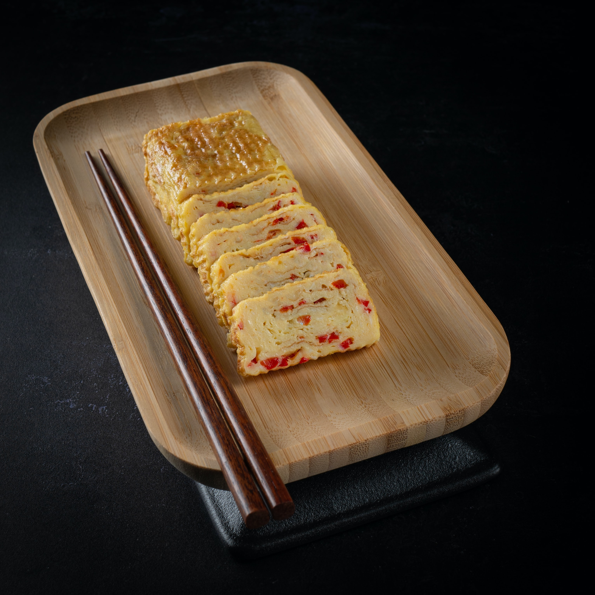

Tamagoyaki
A traditional Japanese dish that is quick to prepare.

- 5 eggs
- 5 tablespoons sugar
- 1 teaspoon salt
- Beat all ingredients together in a bowl
-
Using a ladel, pour a small amount of the mixture into the square pan,
enough for a layer a few millimetres thick to form.
-
Before the mixture cooks through, slide it to the far end of the pan,
then place another ladel of mixture in the newly created space.
-
Before the new layer cooks through, roll the old block of egg over
itself and into the new layer.
-
Slide the new, bigger block to the far edge of the pan, and repeat until
you have used all the egg.